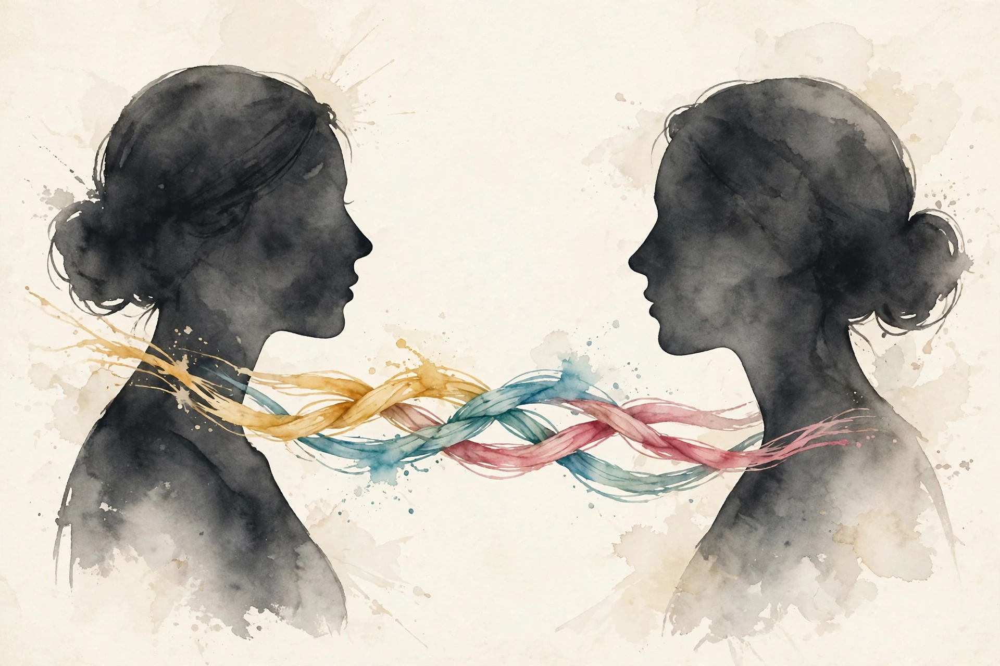

The Wisdom Index: every nugget in this companion
Source fact A claim from the episode transcript. Interpretation My read on what it means. Times marked ~ are proportional estimates from word position, since the transcript carries no timestamps.
~00:00
Communication Is a Skill Set, Not a Trait
Photo. Charles Duhigg. Source: charlesduhigg.com.
Source fact Charles Duhigg wrote Supercommunicators after his own marriage hit the classic pattern: he came home complaining, his wife offered solutions, and both ended up angrier. The researchers he consulted said the field was in a golden age of communication science, and the answer was structural.
Source fact The opening correction: people think great communicators are naturals. The naturals all say otherwise. Asked how they got good, they tell stories of studying: the lonely high schooler who analyzed how kids talk, the child of divorce who became the family peacemaker. Communication is homo sapiens' superpower, the thing that built villages and carried knowledge across generations. Brains evolved for it. But the skills still need practice.
Source fact Introversion and extroversion fit the same frame. The episode presents them as habits, not hardwiring. Extroverts get more reps: more conversations, more failed attempts, more corrections. The difference is practice volume, and practice volume is changeable.
Nugget 1 · Skill
The naturals all studied
What happened. Every great communicator tells a study story. Extroverts just got more reps.
Why it matters. If it were a trait, you would be done. As a skill set, you can train it.
The principle. Count reps, not talent. Volume is changeable.
~00:19
Skill 1: Ask Deep Questions, 10 to 20 Times More
how do you feel about that
Charles Duhigg on looping for understanding, ~00:27
Source fact Consistent supercommunicators ask 10 to 20 times as many questions as average. Many are tiny invitations: what do you make of that. The powerful ones are deep questions: they ask about values, beliefs, or experiences.
Source fact The doctor example: what hospital do you work at asks for a fact. What made you decide to go to medical school asks for a self. Same effort, different universe. Deep questions work in arguments too. Ask how someone felt on election night and they become the expert on their own feeling. Nobody can out-expert you on your own experience. Shared experience reveals the common ground the facts hid: the morning after, the kids, the friends. Then the disagreement becomes discussable.
Nugget 2 · Questions
Ask for the self, not the fact
What happened. Supercommunicators ask 10 to 20 times more questions, weighted toward values, beliefs, and experiences.
Why it matters. Facts invite debate. Selves invite connection. The answerer becomes the expert, and experts do not get argued with.
The principle. Replace one fact question daily with a values or experience question.
~00:27
Skill 2: Prove That You Listen
Illustration. Looping for understanding: ask, repeat back, confirm. AI-generated watercolor.
what does that mean to you
Charles Duhigg on looping for understanding, ~00:27
Source fact Real listening is not silence. Silence is the first condition, not the whole act. While you nod, the speaker suspects you wait your turn. The suspicion is usually correct.
Source fact Looping for understanding, taught at Harvard and Stanford, has three steps. One, ask a question, preferably a deep one. Two, repeat back what you heard in your own words. Not mimicry. Show processing: what I hear you saying is this, and it connects to what you said last week. Three, ask if you got it right. Did I hear you correctly.
The looping sequence
Hover each step for its purpose.
Source: Modern Wisdom, Charles Duhigg, ~00:27. Taught at Harvard and Stanford.
Source fact Step three is the one everyone skips. It asks permission to be acknowledged as a listener. Once acknowledged, the speaker becomes many times more likely to listen to you in return. Basic social reciprocity, from episode 7, doing its quiet work.
Source fact Bad conversations feel like tennis: each side waiting for the bounce to hit back. Good conversations look messy on a transcript: nonlinear, overlapping, alive. Eloquent transcripts are often boring conversations.
Toy: the loop checklist
Recall your last real disagreement. Check which loop steps you ran.
Nugget 3 · Listening
Silence is not listening
What happened. The loop has three steps, and the third, asking if you got it right, is the one everyone skips.
Why it matters. Acknowledgment is what makes them listen back. The first two steps inform. The third bonds.
The principle. Run all three steps in your next disagreement. Never skip the confirm.
~00:34
Skill 3: Vulnerability, Correctly Defined
Source fact The neuroscience definition: vulnerability means telling someone something they could judge. Not trauma dumping. Not crying on shoulders. The mere act of offering judgeable material triggers a neural cascade of vulnerability.
Source fact The rule is reciprocal. You offer something judgeable. They withhold judgment. Better: they offer something judgeable back. Then trust and liking rise automatically. The brain evolved this as a cheap policing system. Societies cannot afford a cop on every corner. Mutual hostages work better: we each hold something the other could use, neither uses it, and both are thereby certified safe.
Source fact Authenticity detection is instant. The yacht example: I spent too much on this yacht, but it is a sweet yacht offers nothing real. The vacation question works: have you ever fought with your partner on a beautiful trip costs little and shares something true. The brain spots the difference immediately.
Source fact The venting taxonomy adds a dark edge. Venting, in the episode's telling, can function as deniable aggression: I am so worried about Johanna, she sleeps with everyone. One sentence transmits the gossip, claims the moral high ground, and keeps culpable deniability. Performative vulnerability online runs the same software at scale. The test is always motive honesty: know what you actually feel, then say it plainly.
Nugget 4 · Vulnerability
Offer one judgeable thing
What happened. Vulnerability is the offer of material they could judge. Reciprocated, it certifies both parties safe.
Why it matters. Oversharing floods before trust exists. Calibrated vulnerability builds it.
The principle. Offer one true, judgeable thing. Watch what returns before offering the next.
~00:57
The Three Conversations

Illustration. Practical, emotional, social: three threads in every discussion. AI-generated watercolor.
Source fact Every discussion contains three layers. Practical: solving problems, making plans. What should we do. Emotional: sharing feelings, wanting empathy. Hear how I feel. Social: negotiating identity and belonging. Where do we stand.
Source fact Duhigg's marriage is the case study. He arrived home in an emotional conversation: validate my frustration. His wife answered in a practical conversation: take your boss to lunch. Different circuits, different brain regions, zero connection. Neither was wrong. They were unmatched.
Source fact Definition: neural entrainment is the syncing of two brains and bodies during a matched conversation. Breathing rates converge. Heart rates converge. Pupil dilation mirrors. The same brain regions activate with the same energy. Uri Hasson at Princeton pioneered the imaging work. Entrainment releases a reward cascade: the brain pays you for connecting, because connection kept the species alive.
The three types and what each wants
Hover each row for its region.
Source: Modern Wisdom, Charles Duhigg, ~00:57. Types and regions as presented on air.
Toy: the PES diagnoser
Think of your last frustrating conversation. Pick the type you held, then the type they held.
Nugget 5 · Matching
Diagnose before you answer
What happened. Mismatched conversations use different brain regions and cannot entrain. Neither partner is wrong. They are unmatched.
Why it matters. Intelligence does not bridge a hardware mismatch. Only matching does.
The principle. Name the type before you respond: practical, emotional, or social.
~01:06
Skill 4: Match the Conversation
Source fact Diagnose the mindset first. Practical, emotional, or social. Then do the smallest thing to match it. The graduation example: instead of congratulations, ask what did it feel like to watch your kid cross the stage. One sentence moves you into their region. Then entrainment can begin.
Source fact The Dartmouth study, cited in the episode: groups watched confusing foreign film clips, then had to reach consensus on what happened. Some groups clicked fast. Brain scans showed the fast groups' brains had become similar. The difference: each fast group contained at least one supercommunicator, someone who asked more questions and repeated others' points. One person modeling the skills entrained the whole room. Strangers, conservatives and liberals, southerners and northerners, clicked because one person set the tone.
Nugget 6 · Entrainment
One person sets the tone
What happened. Each fast Dartmouth group held one supercommunicator. Brains converged. Strangers clicked.
Why it matters. You do not need the whole room trained. One model entrains everyone.
The principle. Be the one who asks more questions and repeats others' points.
~01:14
Reverse Charisma
Illustration. Reverse charisma: make them feel brilliant. AI-generated watercolor.
Source fact The Jenny Jerome story: Churchill's mother dined with Gladstone one night and Disraeli the next. After Gladstone, she thought him the cleverest man in England. After Disraeli, she felt herself the cleverest woman. Disraeli practiced reverse charisma: not to shine, but to make others feel brilliant.
Source fact The episode's formula: charisma as usually defined, energetic outgoing likability, is hard to manufacture. Reverse charisma is easy. Ask the deep question. Prove you listened. Withhold judgment. They leave feeling brilliant, and they credit you.
Source fact Maya Angelou's line, quoted in the episode: no one remembers what you said, they only remember how you made them feel. The science agrees. Ask someone what a great conversation covered and they recall two or three topics, no specifics. Ask how they felt and they report with surprising accuracy, especially the ending. Memory stores the feeling, not the transcript.
Nugget 7 · Reverse
Make them feel brilliant
What happened. Disraeli left Jenny Jerome feeling like the cleverest woman in England. Gladstone left her thinking him clever.
Why it matters. Memory stores the feeling, not the transcript. The credit flows back to you anyway.
The principle. Deep question, proven listening, withheld judgment. Let them shine.
~01:21
Small Talk Is a Doorway, Not a Room
Source fact Nobody likes small talk, including the people defending it. The problem is not smallness. It is the anxiety about going deeper. Nick Epley's experiments, cited in the episode: strangers asked to discuss when did you last cry in front of someone predicted misery and distance. Afterward every hand went up: better than expected, closer than expected. We systematically mispredict deep conversation.
Source fact The weather pivot shows the technique. Do not answer the weather and stop. Use it: you do not like the rain. What brought you to Seattle anyway. Small talk hands you the material. The deep question spends it. Epley's own practice: on a Chicago bus, he reaches hopes and dreams within three questions. Did you always want to be an accountant beats what do you do every time.
Nugget 8 · Depth
We mispredict deep conversation
What happened. Epley's strangers predicted misery and reported closeness. Every hand went up.
Why it matters. The forecasting error keeps everyone in small talk. The data says jump.
The principle. Pivot small talk deep within two exchanges. Spend the material.
~01:44
Laughter Is a Connection Signal
Source fact Robert Provine's research, cited in the episode: he taped people in malls and restaurants expecting to study humor. He found 80 percent of laughter follows nothing funny. Laughter signals I want to connect. Returned laughter signals me too. The vulnerability is small but real: laughing admits you found something funny, which is judgeable.
Source fact NASA's Terry Maguire turned this into a selection tool. He spills papers, laughs a big embarrassing laugh, and watches. Some candidates help while pretending nothing happened. The emotionally intelligent ones jump in the boat: they laugh big back, matching his affect, removing his embarrassment by sharing it. Those candidates became NASA's best leaders.
Source fact The unproven theory, flagged as such in the episode: primate danger calls sound like laughter, and relief at being safe in the trees may be laughter's evolutionary root. Tension built, tension released, everyone still alive. Jokes follow the same arc.
Nugget 9 · Laughter
Laughter means me too
What happened. Eighty percent of laughter follows nothing funny. It is a connection signal, returned in kind.
Why it matters. Matching someone's laugh shares their embarrassment. That is the Maguire test for emotional intelligence.
The principle. Jump in the boat. Laugh big back.
~01:52
Couples: Stop Kitchen Sinking
Source fact The disastrous pattern has a name: kitchen sinking. A fight about Christmas becomes a fight about everything: the mother-in-law, the money, the marriage. The mechanism: feeling threatened, each partner grabs for control, and the easiest thing to control is the other person. You should not feel that way is control disguised as argument.
Source fact The fix is not to suppress the control impulse. It is to redirect it to shared control. Control the environment together: can we talk at 9am instead of midnight. Control the boundaries together: Christmas only, not moms, not money. Same side of the table. Teammates with a disagreement, not opponents with a marriage.
Source fact The telephone history closes the hope case. Early phone calls were telegrams: state the need, hang up. Nobody thought real conversation could happen without faces. Then people learned. They over-enunciate about 30 percent on phones and add about 15 percent more vocal emotion, compensating for the missing channel. Today's online screaming is the telegram phase. The medium gets learned.
Nugget 10 · Conflict
Control the table, not the person
What happened. Kitchen sinking grabs for control of the partner. Shared control redirects it to the environment and the boundaries.
Why it matters. The disagreement stays. The toxicity leaves. Same side of the table.
The principle. Christmas only, not moms, not money. One topic at a time.
The episode in seven lines
- Communication is a skill set. The naturals all studied.
- Ask 10 to 20 times more questions. Weight them deep.
- Loop for understanding: ask, repeat back, confirm.
- Offer one judgeable thing. Vulnerability is reciprocal.
- Diagnose PES before you answer. Match, then travel together.
- Reverse charisma: make them feel brilliant.
- We mispredict deep conversation. Jump anyway.
Distilled from Modern Wisdom, Charles Duhigg: How To Be A Supercommunicator, Mar 2025. Full episode: youtube.com/watch?v=ZOD-C67bUc4. Times are proportional estimates from the transcript.